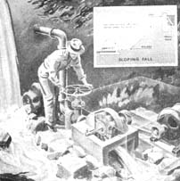

While the penstock may be set up to provide either a precipitous or sloping fall, it should be of as large a diameter as possible, have minimum bends. and hold down flow friction to the least amount.